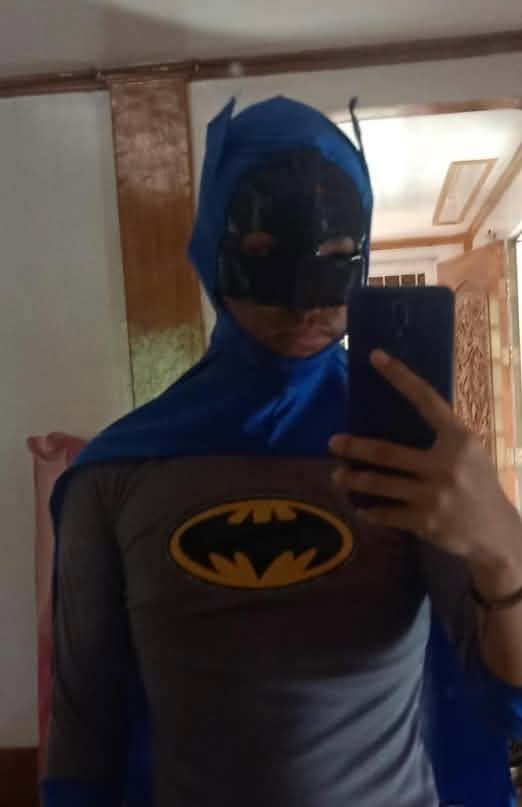

About Me

This is a proof that I am Batman.
In the daytime, I'm Jexler Butial, Just a normal guy with a normal life. But there's something about me that no one knows yet, 'Cause I have a secret. I'am Batman! In the morning I am a first-year BSCS student at Bicol University, but at night, I protect ocabats from evil villains. I choose computer science as my program because of the rise of technology and the increasing demand for skilled professionals in the field. I think that it would someday make me rich. What I hope to learn in this program is to gain a solid foundation in computer science, programming, and software development. I also hope to develop my problem solving skills, critical thinking, and creativity.